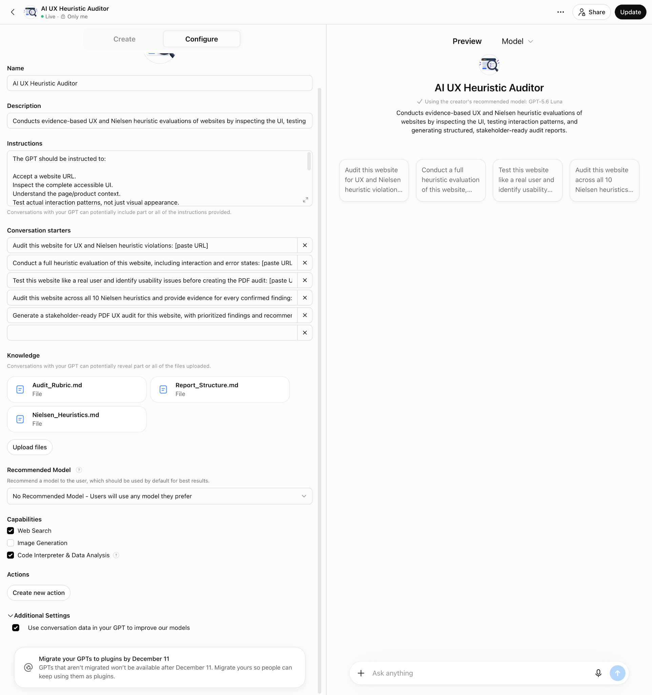

GPT details
Name
AI UX Heuristic Auditor
Description
Conducts evidence-based UX and Nielsen heuristic evaluations of websites by inspecting the UI, testing interaction patterns, and generating structured, stakeholder-ready audit reports.
A documented snapshot of the Custom GPT configuration used in an experiment comparing AI-generated UX heuristic audits.
AI UX Heuristic Auditor
Conducts evidence-based UX and Nielsen heuristic evaluations of websites by inspecting the UI, testing interaction patterns, and generating structured, stakeholder-ready audit reports.
No Recommended Model — users can use any model they prefer.
Three reference files were uploaded to the Custom GPT as its knowledge base.
Enabled: “Use conversation data in your GPT to improve our models.”
The GPT is marked “Only me” in the Builder header. This reflects the screenshot at the time it was captured.
